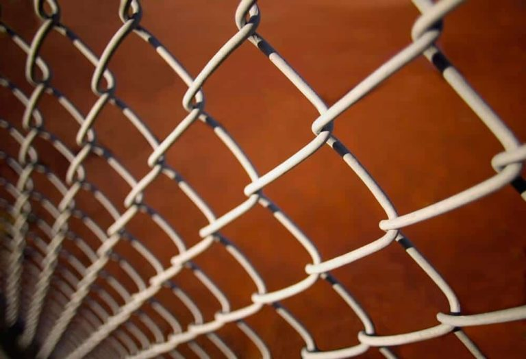

Lifespan
How Long Chain Link Fences Last
A chain link fence can last for many years when it is looked after. Corrosion is the main thing that ends its life early.
2
Key PointsWhat to expect

01
Corrosion Is the Main Enemy
The mesh is made of steel wire, and steel rusts when moisture and air reach it over time. Rust weakens the wire, and a weakened fence can break or tear. A protective coating slows that process.

02
Keep It Clean and Clear
Dirt and debris hold moisture against the wire. Keep the fence clean and free of debris and a well-maintained Gonzales fence can serve for many years. If the steel is left dirty, it will rust.